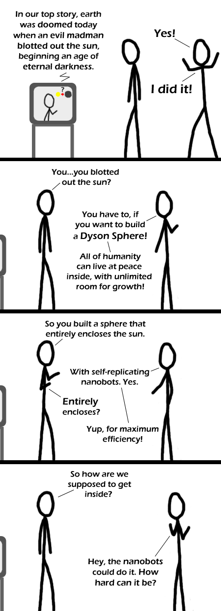

Comic JK 264
When I Feel Like It
⇤
<
?
>
⇥

⇤
<
?
>
⇥
Forum
.
RSS
.
Digg
.
Facebook
.
Reddit
.
Twitter
.
Stumbleupon
Ill go out now and take a sunbath.....EH WTF? I think he missed the point of a Dyson sphere, or rather the parameters: it's supposed to be slightly more than 1 AU in diameter. So the *stars* should have gone out, not the sun! >It just depends how warm you want the inside to be--once you've built a Dyson Sphere, it's not like you need the earth for anything X) >> Maybe he didn't have enough mass to build a bigger one, as even with self replicating nanobots he would have to get the raw materials from somewhere (asteroid belt maybe?) Type II civilization or bust! Getting inside is easy. Get some other nanobots to remove a section (say a circle around moon-sized). You can then make some massive door to put there. >yes but you need to grow a batch of new nanobots before humanity freezes to death >>They would starve before they would freeze. There are plenty of things to burn. Not nearly as many to eat, and those things would go pretty quick in the panic. >>>I have a feeling the atmosphere would freeze if there were _no sun_ >>>>Actually, I think Earth could survive at least a few weeks no problems without the sun. (Although this is without taking into account human panic) >>>>> to get some heat we could just bomb through the uper layers of the earth somewhere and make a nice constantly active supervolcano. How many people only know what a Dyson Sphere is cause of Star Trek? >I know what a Dyson Sphere is, and I didn't know it was in Star Trek because I never watched the TV shows... I learned from Ringworld! Go Larry Niven! I want a dyson sphere :( >how about a Dyson vacuum cleaner to tide you over? One thing I don't get about Dyson Spheres - Assuming you could build one, get an atmosphere and viable ecosystem going around the "equator" (assuming we're running on the centrifugal pseudogravity - that effect doesn't do much when you're close to the axis of spin, or "poles"). Where does the heat go? (While we're engineering the impossible, maybe hope for some method of venting energy without dumping mass too?) > You cover the rest with photovoltaic cells and other forms of solar energy collection. Where does the heat go? It eventually gets radiated by the outer surface of the shell at the same rate at it is received by the inner surface; just as Earth manages to maintain a thermal equilibrium by radiating just as much heat at night as it receives during the day. And, just like on Earth, the interesting bit is what happens to all that energy in between. Dyson wrote *shell* not *closed sphere*... >A sphere's a 2d projection of a 3d ball, whereas a shell is just a sphere with thickness. . . problem, syntax? What I love about wolframalpha.com is that you can do quick calculations with any combination of units. In a few seconds it told me that a sphere (or a shell) with radius 1 AU and thickness 1 cm would have a volume 2.5 times that of earth. Now where would I get that amount of mass if I was a nanobot building a dyson sphere right next to earth?